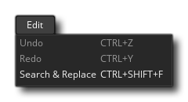

Le menu d'édition vous permet d'utiliser les outils d'édition générale de l'interface de GameMaker Studio 2. Les options disponibles sont:
- Annuler - Annuler une action.
- Rétablir - Rétablir une action précédente.
- Rechercher et remplacer - Ceci ouvre une fenêtre de recherche qui vous permet de rechercher dans tout votre code (y compris le code de création de salle, les scripts et les événements) pour une entrée donnée - voir ci-dessous pour plus d'informations.
Lorsque vous sélectionnez Rechercher et remplacer dans le menu Edition, la fenêtre suivante s'ouvre:
Vous pouvez l'utiliser pour rechercher toutes les ressources scriptées dans votre jeu, y compris le code de la pièce, le code de l'événement et les scripts. Cela peut être une recherche générale, ou vous pouvez le rendre sensible à la casse ou chercher le mot entier seulement. Vous pouvez également fournir une chaîne ou une valeur à utiliser pour remplacer le terme de recherche s'il est trouvé. Les différents boutons situés sous ces options vous permettent de choisir quoi faire et comment effectuer la recherche. Notez que lorsqu'une référence au terme de recherche est trouvée, elle sera ouverte dans l'espace de travail actuel et agrandie / zoomée sur.
Lorsque vous utilisez cette fenêtre pour effectuer une recherche, les résultats seront affichés dans la fenêtre Résultats de la recherche.